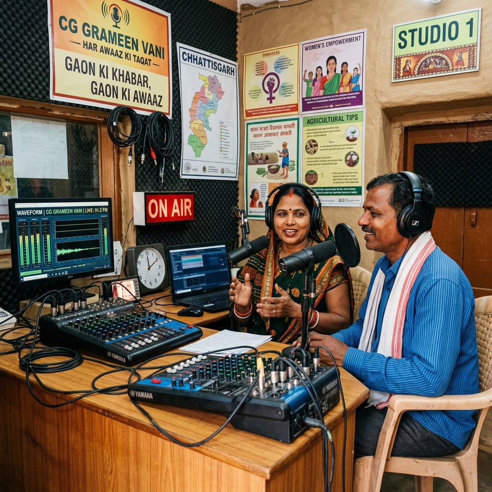
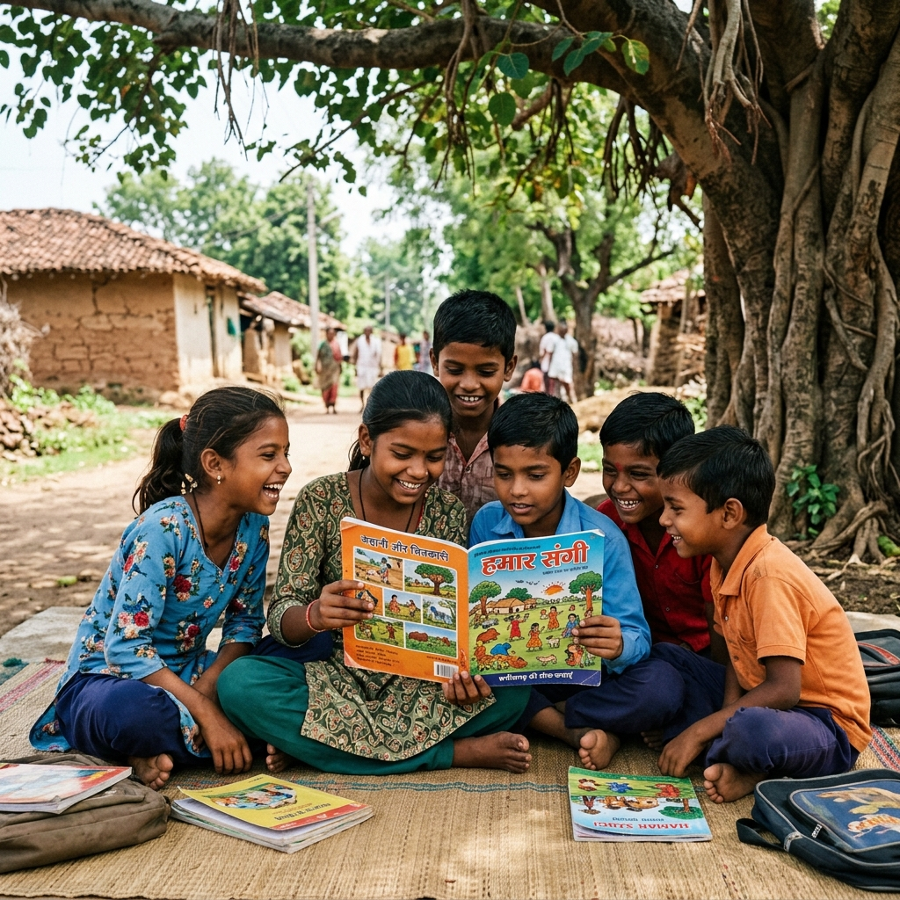

Meer Foundation · Est. 2011 · Chhattisgarh
The Future of Meer
New horizons in community communication and educational media.

RURAL VOICECommunity Radio
We are establishing a community-run radio station to bridge the information gap in rural areas. This platform will broadcast program details, health advice, agricultural weather reports, and local cultural content in vernacular languages.
The station aims to empower villagers to become broadcasters of their own stories.

LITERATUREGuriya Magazine
“Guriya” is our upcoming cultural and educational publication. It will serve as a creative outlet for rural students and a repository of local knowledge, folk tales, and environmental awareness articles.
Distributed across our learning centers, Guriya will inspire a new generation of writers and thinkers.